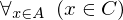
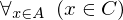
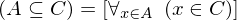
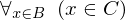
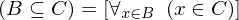
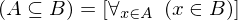

Show the Proof¶
In [1]:
import proveit
# Automation is not needed when only showing a stored proof:
proveit.defaults.automation = False # This will speed things up.
proveit.defaults.inline_pngs = False # Makes files smaller.
%show_proof
Out[1]:
| step type | requirements | statement | ||
|---|---|---|---|---|
| 0 | instantiation | 1, 2, 3 |  , ,  ⊢ ⊢  | |
 : , : ,  :  :  | ||||
| 1 | theorem | ⊢  | ||
| proveit.logic.equality.lhs_via_equality | ||||
| 2 | generalizaton | 4 | , ⊢ | |
| 3 | instantiation | 14 | ⊢  | |
 : , : ,  : :  | ||||
| 4 | instantiation | 5, 6 | , ,  ⊢ ⊢  | |
 : : | ||||
| 5 | instantiation | 11, 7, 8 | ⊢  | |
| : , : | ||||
| 6 | instantiation | 9, 10 | , ⊢  | |
| : | ||||
| 7 | assumption | ⊢ | ||
| 8 | instantiation | 14 | ⊢  | |
| : , : | ||||
| 9 | instantiation | 11, 12, 13 | ⊢  | |
| : , : | ||||
| 10 | assumption | ⊢ | ||
| 11 | theorem | ⊢  | ||
| proveit.logic.equality.rhs_via_equality | ||||
| 12 | assumption | ⊢ | ||
| 13 | instantiation | 14 | ⊢  | |
| : , : | ||||
| 14 | axiom | ⊢  | ||
| proveit.logic.sets.inclusion.subset_eq_def | ||||